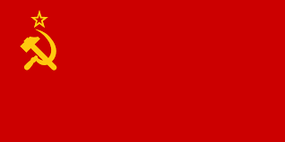

Вторая мировая война
Втора́я мирова́я война́ (1 сентября 1939 — 2 сентября 1945) — война двух мировых военно-политических коалиций, ставшая крупнейшим вооружённым конфликтом в истории человечества.
В ней участвовали 62 государства из 74 существовавших на тот момент (80 % населения Земного шара).
Боевые действия велись на территории Европы, Азии и Африки и в водах всех океанов. Это единственный конфликт, в котором было применено ядерное оружие. В результате войны погибло более 70 миллионов человек, из которых большинство — мирные жители.
Участники
Техника